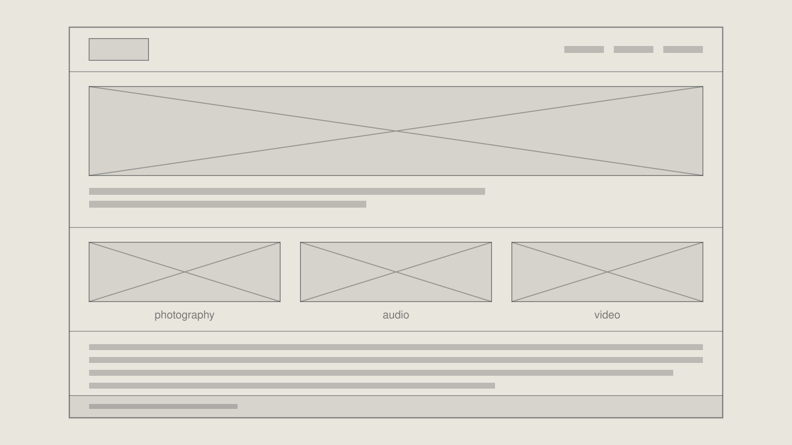

Week 12Phase 1 — Decide how you want to present yourself
- LessonWeek 12 · Phase 1 — Decide how you want to present yourself — Lesson
- Slides17 slides from class
- LabWeek 12 Lab — Build the specification you will work to
- CheckpointCheckpoint 1 — Brand foundation
- SheetBrand Guide & Style Guide — <Your Name>
- Starter filesLanding page starter
Diagrams
From the lesson. Yours to keep — print them, mark them up.

Review before class
No set review this phase — these weeks are production. The reading time stated in the lesson still applies.